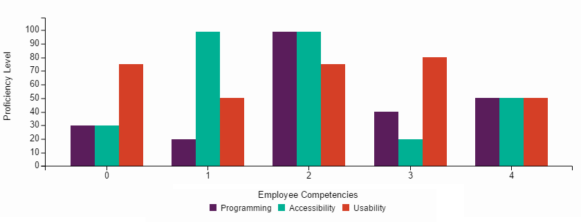

Profile Statistics
Understanding the skills a candidate possesses is an easy benchmark to utilize when comparing multiple individuals. The information on this page will help you determine which candidates are the best match for the position you are aiming to fill.
Employee Comparison

Analysis of Development Skills and Competencies
This graph provides a visual comparison of key skills of each employee which is provided in the data tables. The comparison indicates the level of proficiency for select employees in each of the following skills: programming, accessibility and usability.